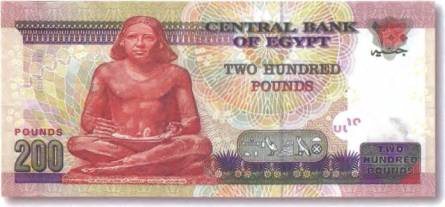
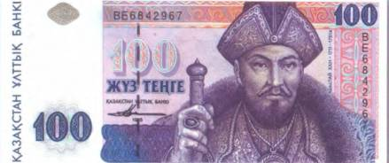
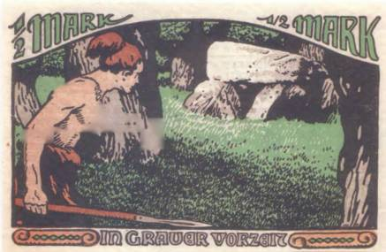
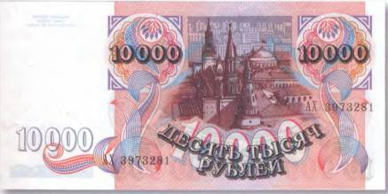
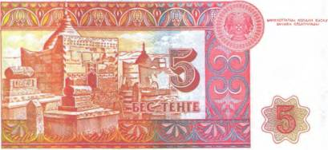

Тайны бумажных денег : Артефакты с того света

Было бы неверно полагать, что такие темы, как смерть, загробная жизнь, погребальные культы и все, что с ними связано, могут быть отображены исключительно на неофициальных платежных средствах вроде все тех же китайских «денег мертвых», которые, как может кому-то показаться, кроме разве что самих китайцев да бонистов, никто и всерьез-то не воспринимает. Ведь примеров, доказывающих обратное, — множество!
Достаточно вспомнить рисунки на банкнотах Египта, где можно увидеть посмертную маску совсем еще юного фараона Тутанхамона и другие артефакты, найденные в захоронениях древнеегипетских правителей, как, например, статуэтка писца с актуальной египетской купюры в 200 фунтов (рис. 20).

Уже не говоря о свидетельствах жутких ритуалов, как правило заканчивавшихся человеческими жертвоприношениями, на бумажных денежных знаках Мексики.

А сколько существующих ныне банкнотных изображений родилось благодаря кропотливому научному изучению человеческих останков! Яркими примерами тому могут служить узбекская бона в 500 сумов с памятником Тамерлану [5], а также бона в 100 тенге 1993 г., из первой серии национальной валюты Казахстана (рис. 21).
На ней помещен лик хана Аблая (1711–1781) — последнего правителя суверенного Казахского ханства. Этот портрет был создан в том числе и на основании реконструкции, проведенной после исследования ханского черепа ученым-антропологом Оразаком Смагуловым.
Что уж тогда говорить о многочисленных банкнотных изображениях, которые словно бы нарочно документируют развитие кладбищенской архитектуры всех времен и народов!

Это и мегалитические погребения древних народов, в незапамятные времена населявших север Европы, как каменные могилы на некоторых немецких нотгельдах 20-х гг. прошлого века (рис. 22). Это и Великие пирамиды в Гизе (Египет), и гробница полулегендарного правителя древних персов Кира II в Пасаргадах (Иран), и усыпальница Амира Темура (Тамерлана) в Самарканде (Узбекистан), которые также присутствуют на бумажных денежных знаках соответствующих стран. И наконец, всем известный Мавзолей В. И. Ленина, запечатленный на постсоветской боне в 10 000 руб. 1992 г. вместе с частью некрополя у Кремлевской стены и колумбарием (захоронением урн с прахом) в самой стене (рис. 23).

Как бы чудовищно это ни звучало, но тема бренности жизни и потусторонних мистерий всегда присутствовала на бонистическом материале, и, похоже, создатели новых банкнотных серий не собираются от нее так быстро отказываться.
На казахстанской боне в 5 тенге 1993 г. имеется рисунок старинного казахского кладбища с близко расположенными друг к другу мазарами (рис. 24).

Слово «мазар» с арабского языка переводится как «место, которое посещают». Это не что иное, как мусульманские могилы, которые, как видно на боне, могут иметь самые разные формы и конструкции. Близкое расположение могил можно объяснить тем, что казахские захоронения относятся к разряду родовых, то есть каждого умершего родственника старались похоронить рядом с его предками. Камнерезное дело у казахов в основном было связано с сооружением надгробных памятников, и это искусство передавалось из поколения в поколение — от отца к сыну. Занимательно, что на представленных здесь 5 тенге показаны практически все известные разновидности мусульманских надгробий. На переднем плане хорошо видна небольшая каменная стела. Это — кой mac — самый простой вариант «погребальной» архитектуры. Их нередко украшали витиеватой резьбой, в которой были закодированы пожелания благополучия покойному на том свете. А вот стилизованное изображение бараньих рогов на таком камне и вовсе имело магическое значение. Два следующих за кой тасом сооружения, выполненные в форме поставленных на постаменты сундуков, именуются сандык mac. А на заднем плане изображения один за другим возвышаются мавзолеи. Этот наивысший тип надгробных строений называется кумбез. Такие шатровые сооружения, имеющие в основании четырехугольник, были по карману только знатным, а значит, и богатым казахам. Что, впрочем, сегодня не менее актуально, чем сотни лет назад. Интересно, что внешние стены кумбеза, как правило, украшались резным орнаментом или растительными узорами. В то время как внутренние обычно расписывались изображениями предметов народного быта и боевого оружия.